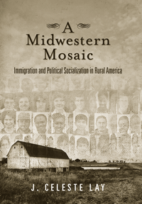

How native-born rural adolescents adapt to new immigrants in their communities
How native-born rural adolescents adapt to new immigrants in their communities


 How native-born rural adolescents adapt to new immigrants in their communities
How native-born rural adolescents adapt to new immigrants in their communities

|  |
A Midwestern MosaicImmigration and Political Socialization in Rural AmericaJ. Celeste Laypaper EAN: 978-1-43990-793-1 (ISBN: 1-43990-793-5) |
"A Midwestern Mosaic is a clearly-written, thoroughly researched, and highly original book. Lay’s landmark study on the reaction to diversity in small American towns makes a major contribution in its examination of the influence of the immigrant diaspora into rural America. She exhibits an impressive breadth of knowledge and sheds new light on an important new development in the ethnic history of the nation."
—James Gimpel, Professor of Government at the University of Maryland, College Park
Drawn by low-skilled work and the safety and security of rural life, increasing numbers of families from Latin America and Southeast Asia have migrated to the American heartland. In the path-breaking book A Midwestern Mosaic, J. Celeste Lay examines the effects of political socialization on native white youth growing up in small towns.
Lay studies five Iowa towns to investigate how the political attitudes and inclinations of native adolescents change as a result of rapid ethnic diversification. Using surveys and interviews, she discovers that native adolescents adapt very well to foreign-born citizens, and that over time, gaps diminish between diverse populations and youth in all-white/Anglo towns in regard to tolerance, political knowledge, efficacy, and school participation.
A Midwestern Mosaic looks at the next generation to show how exposure to ethnic and cultural diversity during formative years can shape political behavior and will influence politics in the future.
Excerpt available at www.temple.edu/tempress
"A Midwestern Mosaic, is an engaging account of the influence of Latino immigration on the native youth of rural Iowa. Lay challenges political scientists to examine rural America in more detail as a way of understanding political socialization under conditions of rapid demographic change. Tracing the process of political socialization, Lay offers us a balanced and locally- informed view of the realities of people dealing, in large part effectively, with social change. A Midwestern Mosaic is a quiet, balanced voice of hope for a growing tolerance of Iowa’s young, maturing, immigrant and native generation."
—David Griffith, Senior Scientist and Professor of Anthropology at East Carolina University
"A timely book because of the debate surrounding immigration in the United States today, A Midwestern Mosaic effectively and rather persuasively melds the political socialization of youth with social factors influencing attitudes toward immigration in the rural setting. Lay’s rigorous in-depth narratives and her survey data collection and analysis yield a nuanced and compelling argument for what the ‘new normal’ might look like in communities where Latino immigrant children grow up alongside those of the mainstream population. A Midwestern Mosaic is a welcome addition to the literature of immigrant reception, political socialization, and inter-racial relations."
—Dr. Jonathan Benjamin-Alvarado, Professor of Political Science and Assistant Director of Latino/Latin American Studies at the University of Nebraska–Omaha
"A Midwestern Mosaic makes important contributions to several literatures. To political scientists, the book offers insights about the roles of time and racial context in the political socialization of adolescents and the importance of systematically analyzing rural politics. Contributions to immigration research focusing on non-traditional destinations includes information about how quickly adolescents can adapt to demographic change, the emphasis on political socialization, and the formal comparison of immigrant-receiving communities that, on their face, might appear to be quite similar. [Lay's] qualitative data also yield important insights about what high schools and other institutions in rapidly changing communities can do to encourage positive relationships between long-time residents and newcomers. For all of these reasons, this book will be of great interest to scholars, community leaders, policymakers, and others."
— International Migration Review
"Lay advances our knowledge of immigrant reception in the Midwest and incorporation into the region's civic and political life. In her timely book, A Midwestern Mosaic, Lay examines the effects of rapid ethnic diversification on the political socialization of young adolescent natives at the local level.... This book is a valuable addition to the literature on immigration, integration, and political socialization. J. Celeste Lay provides the reader with a detailed analysis of the political socialization process as it develops within rural communities in the American heartland....Anyone interested in the rapid demographic changes occurring in the rural Midwest and the emerging relationships being produced will most definitely find an engaging read in this highly thought-provoking book."
— Rural Sociology
"Lay addresses a very important question: What is the impact of ethnic diversity in rural areas?.... Lay's findings are interesting....This book should be of interest to Iowans and people interested in rural communities in the Midwest."
— The Annals of Iowa
"A Midwestern Mosaic is well ahead of the curve. This book provides a comparative community case study of the implications of new minority growth in two new Hispanic rural destinations in Northwest Iowa.... A Midwestern Mosaic provides an empirical benchmark on an important topic.... [I]t is as much about racial and ethnic attitudes as it is about rural political socialization or the potential casual mechanisms that contribute to evolving attitudes (movement along the continuum between political left and right) among native-born rural youth and adolescents. In the end, A Midwestern Mosaic probably raises more (good) questions than it answers, but this is a positive feature of this short book."
— Contemporary Sociology
Preface and Acknowledgments
Introduction: Places and Political Learning
1. Transformation of Small-Town America
2. A Natural Experiment in Iowa Towns
3. Seeing Race: Attitudes toward Immigrants and Symbolic Racism
4. No Retreat: Civic Withdrawal and Immigration
5. Gradual Progress
6. What Happened to My Town?
Conclusion: The Implications of a New Normal
Appendix: Samples, Survey Items, and Variables
Notes
Bibliography
Index
J. Celeste Lay is an Assistant Professor of Political Science at Tulane University.
Political Science and Public Policy
Sociology
Immigration Studies
Social Logic of Politics, edited by Scott D. McClurg.
The Social Logic of Politics Series, edited by Scott D. McClurg (formerly edited by Alan S. Zuckerman), directs attention to several related clusters of research in the social sciences. At the core is a theoretical principle: individuals make political decisions, like other choices, by taking into account cues from other persons. Studies move from individuals to groups to large scale collectivities. Usually examining micro-politics-voting and other forms of political participation; the place of politics in households, the family, the friendship unit, and the neighborhood- this research also studies how broader political and social contexts influence and are influenced by these micro-processes. It includes as well "small group behavior" in political institutions, such as exchanges of cues in legislatures and patron-client relations in bureaucratic agencies and political parties. Books in The Social Logic of Politics Series will apply research techniques that run the gamut of contemporary political science, sociology, communications, and geography.
© 2015 Temple University. All Rights Reserved. This page: http://www.temple.edu/tempress/titles/2180_reg.html.